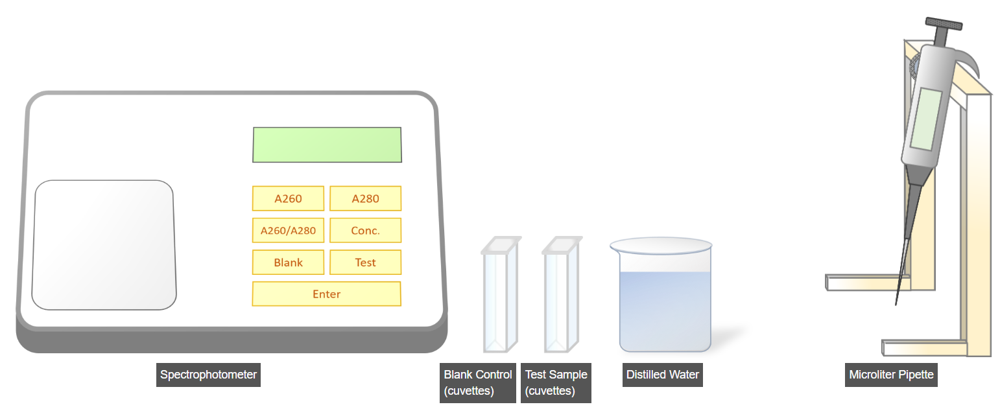

Experimental Procedures for DNA analysis
1. UV Absorbance Method for DNA Quantification

A. Preparation of Blank (Control) Sample
- Select a microliter pipette and set its volume to 25 µL.
- Aspirate 25 µL of distilled water from the beaker.
- Transfer the distilled water into a test sample cuvette.
- Again aspirate 25 µL of distilled water.
- Transfer it into the blank sample cuvette.
- Proceed to measure the blank sample reading.

B. Zeroing (Blank Calibration) of Spectrophotometer
- Open the spectrophotometer lid.
- Insert the blank cuvette into the spectrophotometer.
- Close the lid properly to allow light passage.
- Press the Blank button and confirm by pressing Enter.
- Measure absorbance at 260 nm (A260).
- Measure absorbance at 280 nm (A280).
- Proceed to the test sample measurement.

C. Measurement of DNA Sample
- Set the microliter pipette to 25 µL.
- Aspirate 25 µL of DNA sample from the microcentrifuge tube.
- Transfer it into the test sample cuvette.
- Open the spectrophotometer lid and insert the DNA sample cuvette.
- Close the lid properly.
- Press the Test button and confirm by pressing Enter.
- Record absorbance at 260 nm (A260).
- Record absorbance at 280 nm (A280).
- Press A260/A280 to calculate the purity ratio.
- Press Conc to calculate the DNA concentration.
2. Agarose Gel Electrophoresis

A. Preparation of Agarose Gel
- Weigh 1.5 g of agarose powder using a weighing balance.
- Transfer the weighed agarose into a blank flask.
- Add 150 mL of TAE/TBE buffer solution to the flask.
- Mix the solution thoroughly.

Heating and Cooling of Agarose Solution
- Place the flask into a microwave oven.
- Heat the mixture for up to 3 minutes until it becomes transparent.
- Transfer the hot flask into the cooling system.
- Cool the solution at 50°C for 10 minutes.

B. Casting and Solidification of Agarose Gel
- Place the casting dam inside the electrophoresis tank.
- Insert the comb properly into position.
- Set the microliter pipette to 5 µL.
- Add 5 µL of ethidium bromide to the agarose solution (handle with safety).
- Mix the agarose solution gently.
- Pour the mixture into the electrophoresis tank.
- Allow the gel to solidify for 20–30 minutes at room temperature.
- Remove the casting dam and comb carefully.
- Pour TAE/TBE buffer into the tank until the gel is fully submerged.

C. Preparation of DNA Sample
- Set the microliter pipette to 100 µL.
- Add the loading buffer to the DNA sample.
- Mix gently and proceed to loading.

D. Loading of DNA Samples
- Set the microliter pipette to 100 µL.
- Load the DNA ladder into the first well of the gel.
- Load the prepared DNA samples into the remaining wells.

E. Electrophoresis Process
- Cover the electrophoresis tank with its protective shield.
- Switch on the power supply at 100 V.
- Allow electrophoresis to continue until DNA migrates to the desired distance.
- Turn off the power supply immediately.

F. Visualization of DNA Bands
- Place the gel on the UV transilluminator.
- Observe the DNA bands under UV light.
- Analyze and document the results using the monitor.